ВУМ - кратки курсове за qa
Преподавател: инж. Йорданка Будинова, d.budinova@gmail.com
https://vum.bg/bg/qa-short-course/
- Въведение в софтуерното тестване и осигуряване на качеството
- Backend API тестване с Python
- Jenkins - проект за непрекъсната интеграция
- Appium, Selenium Grids
- Kali linux за тестери
- Локализация и интернационализация – предизвикателствата към QA
- Aвтоматизиране на визуалното тестване с Python
- Миграция на DB схема – приложение в софтуерната разработка и тестване
- Cофтуерни метрики / SW metrics
Courses:
- Software Quality Engineering
- SW Metrics Created by Dani Budinova-Spahieva, d.budinova@gmail.com
Press ESC to enter the slide overview. Use the Space key to navigate through all slides. Presentations look great on touch devices, like mobile phones and tablets. Simply swipe through your slides.
Software Quality Engineering
Chapter 1 - Software Quality Fundamentals
Created by Dani Budinova-Spahieva, d.budinova@gmail.com
Press ESC to enter the slide overview. Use the Space key to navigate through all slides. Presentations look great on touch devices, like mobile phones and tablets. Simply swipe through your slides.
1.1 Software Engineering Culture and Ethics
The culture of an organization is a critical success factor in its process improvement ef- forts. "Culture" includes a set of shared values and principles that guide the behaviors, activities, priorities, and decisions of a group of people working in the same area. When coworkers align along common beliefs, it is easier to induce changes that will increase the group's effectiveness and its probability of survival. A shared culture is one difference between a "team" and a "bunch of bozos on a bus.
Customer involvement is the most critical factor in software quality.
Any successful enterprise requires that you both do the right thing, and do the thing right. We ex- pect that professional software developers know how to do the "thing" right. Doing the right thing, though, requires an unambiguous understanding of what your customer expects. To this end, we strive to maximize participation of our customers in our development activities.
Sharing the vision of the final product with the customer
The classic failure of software development is that the product delivered only vaguely matches the expectations of the customer. Every project, even small ones developing internally reusable software components, goes through a formal, written requirements specification process If you don't have time to do it right, when will you have time to do it over?
Quality is the top priority; long-term productivity is a natural consequence of high quality
Ongoing education is every team member's responsibility.
Have a peer, rather than a customer, find a defect.
Written software development procedures can help improve quality.
Continual improvement of your software development process is both possible and essential.
Never let your boss or your customer talk you into doing a bad job.
People need to feel that the work they do is noticed.
Summary
You can't buy a culture in shrink-wrap; you must roll your own. Every software team works in a different context of expectations, pressures, application domains, and technolo- gies. The process of agreeing upon principles and values provides many opportunities for im- proving both the work environment and the work results. A shared culture is essential to progress through the software process maturity sequence to the discipline of repeatable and measurable software development processes.
Value and Cost of Quality (COQ)
Associated with providing poor quality products or services. Categories:
internal failure costs
associated with defects found before the customer receives the product or serviceexternal failure costs
associated with defects found after the customer receives the product or serviceappraisal costs
incurred to determine the degree of conformance to quality requirementsprevention costs
incurred to keep failure and appraisal costs to a minimum.
Cost of quality
is a methodology that allows an organization to determine the extent to which its resources are used for activities that prevent poor quality, that appraise the quality of the organization's products or services, and that result from internal and external failures. Having such information allows an organization to determine the potential savings to be gained by implementing process improvements.
Quality-related activities that incur costs may be divided into:
prevention costs
appraisal costs
internal costs
external costs
Prevention costs
Incurred to prevent or avoid quality problems. Associated with the design, implementation, and maintenance of the quality management system. Planned and incurred before actual operation, and they could include:
Product or service requirements
establishment of specifications for incoming materials, processes, finished products, and servicesQuality planning
creation of plans for quality, reliability, operations, production, and inspectionQuality assurance
creation and maintenance of the quality systemTraining
development, preparation, and maintenance of programs
Appraisal costs
Associated with measuring and monitoring activities related to quality. These costs are associated with the suppliers' and customers' evaluation of purchased materials, processes, products, and services to ensure that they conform to specifications. They could include:
Verification
checking of incoming material, process setup, and products against agreed specificationsQuality audits
confirmation that the quality system is functioning correctly-
Supplier rating
assessment and approval of suppliers of products and services
Internal failure costs
Incurred to remedy defects discovered before the product or service is delivered to the customer. These costs occur when the results of work fail to reach design quality standards and are detected before they are transferred to the customer. They could include:
Waste
performance of unnecessary work or holding of stock as a result of errors, poor organization, or communicationRework
Failure analysis
External failure costs
Incurred to remedy defects discovered by customers. These costs occur when products or services that fail to reach design quality standards are not detected until after transfer to the customer. They could include:
Repairs and servicing
Warranty claims
Complaints
all work and costs associated with handling and servicing customers' complaints
Cost of quality and organizational objectives
The costs of doing a quality job, conducting quality improvements, and achieving goals must be carefully managed so that the long-term effect of quality on the organization is a desirable one. The quality cost system, once established, should become dynamic and have a positive impact on the achievement of the organization's mission, goals, and objectives.
Models and Quality Characteristics
The official ISO 9126 documentation software quality model identifies 6 main quality characteristics, namely:
Functionality
The software system is functioning, as specified,Reliability
the capability of the system to maintain its service provision under defined conditions for defined periods of time. (fault tolerance - the ability of a system to withstand component failure)
Models and Quality Characteristics - part 2
Usability
exists with regard to functionality and refers to the ease of use for a given function. learnability is also a major subcharacteristic of usability.Efficiency
concerned with the system resources used when providing the required functionality.Maintainability
ability to identify and fix a fault within a software component; testability, readability, modularizationPortability
how well the software can adopt to changes in its environment or with its requirements
Functionality
Suitability
appropriateness of the functions of the software.Accurateness
correctness of the functionsInteroperability
the ability of a software component to interact with other components or systems.Compliance
Where appropriate certain industry (or government) laws and guidelines need to be complied withSecurity
unauthorized access to the software functions
Reliability
Maturity
frequency of failure of the software.Fault tolerance
The ability of software to withstand (and recover) from component, or environmental, failureRecoverability
Ability to bring back a failed system to full operation, including data and network connections.
Usability
Understandability
Determines the ease of which the systems functions can be understoodOperability
Ability of the software to be easily operated by a given user in a given environment.Learnability
Learning effort for different users, i.e. novice, expert, casual etc.Efficiency
Time behavior
Characterizes response times for a given thru put, i.e. transaction rate.Resource behavior
Characterizes resources used, i.e. memory, cpu, disk and network usage.Maintainability
Analyzability
Characterizes the ability to identify the root cause of a failure within the softwareChangeability
Characterizes the amount of effort to change a system.Stability
Characterizes the sensitivity to change of a given system that is the negative impact that may be caused by system changes.Testability
Characterizes the effort needed to verify (test) a system change.Portability
Adaptability
Characterizes the ability of the system to change to new specifications or operating environments.Installability
Characterizes the effort required to install the softwareConformance
portabilityReplaceability
Characterizes the plug and play aspect of software components, that is how easy is it to exchange a given software component within a specified environment.Software Development Models
Testing does not exist in isolation, test activities are related to software development activities. Different development life cycle models need different approaches to testing. There are various Software development models or methodologies. http://istqbexamcertification.com/what-are-the-software-development-models/
Software Development Models:
Waterfall model
V model
Incremental model
RAD model
Agile model
Iterative model
Spiral model
Prototype model
Software Quality Improvement
Software underpins nearly every business process. Therefore it's essential to lower the cost of testing and improve the quality of your software. These four pointers will help you improve software quality and improve testing efficiency.
Test at the right time
By testing earlier you will be able to detect and solve defects rather than having to resolve them at the end of the process. The later software bugs are detected, the longer and more expensive they are to resolve. Fixing bugs early can be a game-changer. The firm cut development time by 25 percent and bug fixing costs by 31 percent. Get testers involved during the requirements and design stage so they can help formulate a more effective test framework. More than 70 percent of software issues in a live environment can be traced back to poor requirements. Implement Static testing early in the life cycle to give immediate reactions on quality issues regarding your software development.
Improve testing organisation
Be professional in your testing or risk harming your business. Implement specific policies to direct a consistent approach like using repeatable industry standard testing processes and training testers within this framework. Remember: Use metrics. This helps keep track of where you are ensuring that you don't start before you're ready, and you finish when you're done to prevent wasted bandwidth.
Innovation leads to improvement
Write automated tests wherever possible to make your testing process more efficient. Make sure that your testing is targeted too. By using test design techniques and risk-based testing you can make sure that you will be using fewer, but more worthwhile tests.
Keep reviewing
You can have too much of a good thing. Just because certain methods have worked in the past doesn't mean they always will. Processes of evaluation and refactoring allow your testing team to maximise efficiency by reviewing what worked well. Implement a Root cause analysis process which distinguishes whether issues were a 'testing miss', a 'development miss' or a 'requirements or design miss'. This will help to identify areas for improvement throughout the whole software development process.
Software system safety
In software engineering, software system safety optimizes system safety in the design, development, use, and maintenance of software systems and their integration with safety-critical hardware systems in an operational environment. There are three major types of software failure. Not all of these can be rectified by the programmers. The three types are:
Software logic errors,
Software support errors,
Hardware failures
Techniques
During preliminary design
During Analysis/Requirements
During the Software Design phase
During the late design and coding phase
Software verification and testing
Chapter 2 - Software Quality Management Processes
2.1 Software Quality Assurance
2.2 Verification & Validation
2.3.Reviews and Audits
2.3.1 Management Reviews
2.3.2 Technical Reviews
2.3.3 Inspections
2.3.4 Walkthroughs
2.3.5 Process Assurance and Product Assurance Audits
2.1 Software Quality Assurance
This chapter describes ways to organize test teams, which qualifications are important, the tasks of a test manager, and which supporting processes must be present for efficient testing.
2.1.1 Test Organization
Test Teams - independent testing
pro:
a) Independent testers are unbiased and thus find additional and different of independent testing defects than developers find.
b) An independent tester can verify (implicit) assumptions made by developers during specification and implementation of the system.
cons:
Too much isolation may impair the necessary communication between independent testing testers and developers.
Independent testing may become a bottleneck if there is a lack of necessary resources.
Developers may lose a sense of responsibility for quality because they may think, "the testers will find the problems anyway."
Models of independent testing
The development team is responsible for testing, but developers test each other's programs
There are testers within the development team; these testers do all the test work for their team.
One or more dedicated testing teams exist within the project team
Independent test specialists are used for specific testing tasks (such as performance test, usability test, security test)
A separate organization (testing department, external testing facility, test laboratory) takes over the testing
Hint
Project or test management should set testing standards and rules, and require test logs from the developers.
To provide support for applying systematic testing methods, testing specialists should, at least temporarily, be called in as coaches.
2.1.2 Tasks and Qualifications
Test manager (test leader)
Test designer (test analyst)
Test automator
Test administrator
Tester
2.2 Test Planning
Quality Assurance Plan
Test designer (test analyst)
Test automator
Test administrator
Tester
2.2.1 Quality Assurance Plan - IEEE 730-2002
1. Purpose
2.Reference documents
3.Management
4.Documentation
5.Standards, practices, conventions, and metrics
6.Software reviews
7.Test
8.Problem reporting and corrective action
2.2.1 Quality Assurance Plan - IEEE 730-2002 part 2
9.Tools, techniques, and methodologies
10.Media control
11.Supplier control
12.Records collection, maintenance, and retention
13.Training
14.Risk management
15.Glossary
16.SQA Plan Change Procedure and History
2.2.2 Test Plan
Defining the overall approach to and strategy for testing
Deciding about the test environment and test automation
Defining the test levels and their interaction, and integrating the testing activities with other project activities
Deciding how to evaluate the test results
Selecting metrics for monitoring and controlling test work, exit criteria
Determining how much test documentation shall be prepared and determining templates
Writing the test plan and deciding on what, who, when, and how much testing
Estimating test effort and test costs
Test Plan according to IEEE 829-1998
1.Test plan identifier
2.Introduction
3.Test items
4.Features to be tested
5.Features not to be tested
6.Approach
7.Item pass/fail criteria (test exit criteria)
8.Suspension criteria and resumption requirements
Test Plan according to IEEE 829-1998 part 2
9.Test deliverables
10.Testing tasks
11.Environmental needs
12.Responsibilities
13.Staffing and training needs
14.Schedule
15.Risk and contingencies
16.Approvals
2.2.3 Prioritizing Tests
The usage frequency of a function or the probability of failure in software use.
Failure risk.
The visibility of a failure for the end user
Priority of the requirements.
Verifying conformance to required quality characteristics - high priority.
System architecture
Complexity
Project risk
2.2.4 Test Entry and Exit Criteria /when testing can be started and stopped/
preconditions for starting test execution
The test environment is ready.
The test tools are ready for use in the test environment.
Test objects are installed in the test environment.
The necessary test data is available.
2.2.4 Test Entry and Exit Criteria /Test manager/
stop test execution
Achieved test coverage: Tests run, covered requirements, code coverage, etc.
Product quality: Defect density, defect severity, failure rate, and reliability of the test object
Residual risk: Tests not executed, defects not repaired, incomplete coverage of requirements or code, etc.
Economic constraints: Allowed cost, project risks, release deadlines, and market chances
2.3 Cost and Economy Aspects
2.3.1 Costs of Defects
2.3.2 Cost of Testing
2.3.3 Test Effort Estimation
2.4 Choosing the Test Strategy and Test Approach
A test strategy or approach defines the project's testing objectives and the means to achieve them. It therefore determines testing effort and costs.
2.4.1 Preventative /testers are involved from the beginning/ vs. Reactive Approach /testers are involved (too) late/
2.4.2 Analytical vs. Heuristic Approach
2.4.3 Testing and Risk - Risk = damage * probability
2.5 Managing The Test Work
2.5.1 Test Cycle Planning - State of developmen, test results, resources
2.5.2 Test Cycle Monitoring /Test status report/
2.5.3 Test Cycle Control React on deviations from the plan
2.6 Incident Management
2.6.1 Test Log /Documenting incidents/
2.6.2 Incident Reporting /Document all information relevant to reproduction and correction/
2.6.3 Defect Classification
2.6.4 Incident Status
2.6.2 Incident Report template
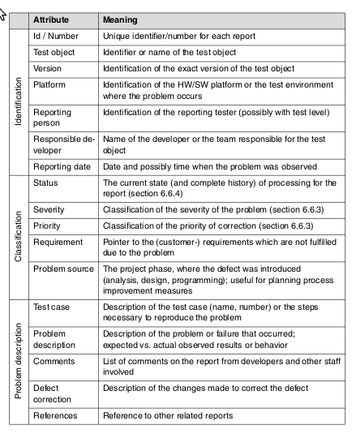2.6.3 Defect Classification
severity - how far product use is impaired. 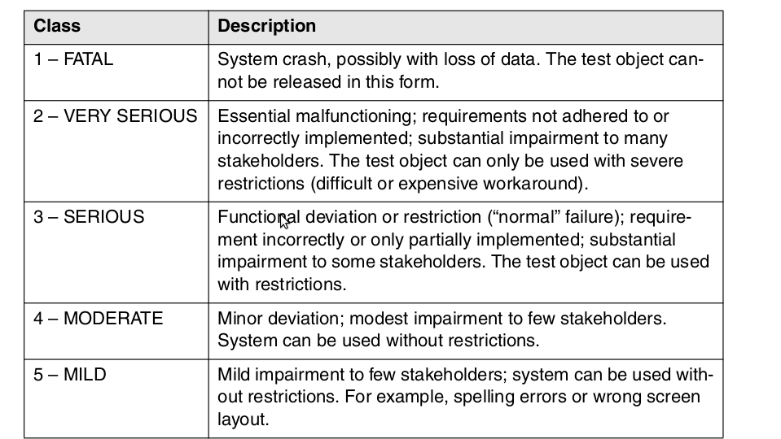2.6.3 Defect Classification
priority - how quickly a fault should be corrected 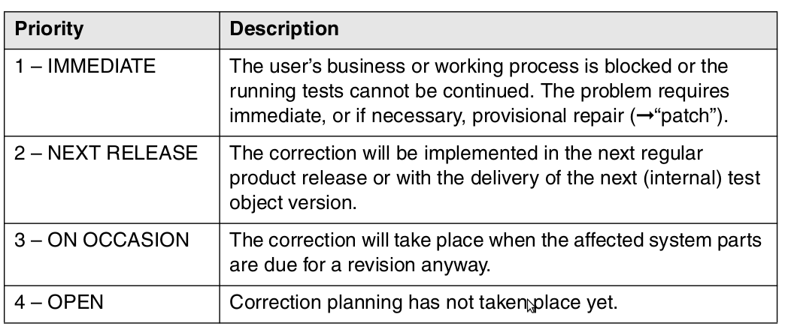Incident Report template
2.6.4 Incident status
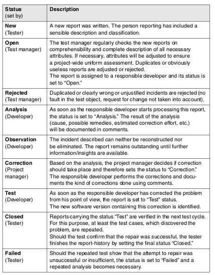2.6.4 Incident status - change control board, usually consists of representatives from the following stakeholders: product management, project management, test management, and the customer.
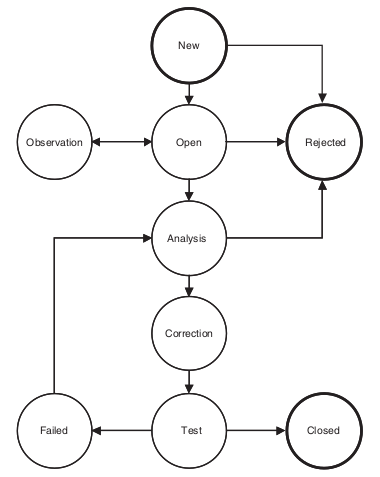2.7 Requirements to Configuration Management
Version management
Configuration identification
Incident and change status control
Configuration audits
2.8 Relevant Standards
Company standards
Best practices
Quality management standards [ISO 9000]
Standards for particular industrial sectors
Software testing standards - [BS 7925-2], [IEEE 829], [IEEE 1028], [ISO 29119]
2.9 Verification & Validation
Within each test level, the tester must make sure the outcomes of development meet the requirements that are relevant or specified on this specific level of abstraction. This process of checking the development results according to their original requirements is called validation.
Does a product solve the intended task?
Is it the right system?
Am I building the right product?
2.9 Verification
Unlike validation, verification refers to only one single phase of the development process. Verification shall assure that the outcome of a particular development level has been achieved correctly and completely, according to its specification (the input documents for that development level).
Is the system correctly built?
Does a product fulfill its specification?
Am I building the product right?
Verification vs Validation
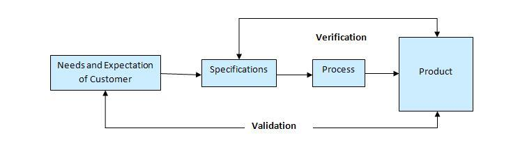Validation is a High level activity.
Verification is a Low level activity.
Validation is done at the end of the development process and takes place after verifications are completed.
2.10 Reviews and Audits
Types of Reviews
Reviews pertaining to products or intermediate products that have been created during the development process
Reviews that analyze the project itself or the development process
2.10 Reviews and Audits - part 2
Management reviews evaluate actual project results with respect to plans.
Technical reviews (including inspections, walk-through, and desk checking) examine engineering work-products.
Product assurance audits make certain to provide evidence that software products and related documentation are identified in and comply with contracts; and ensure that non-conformances are identified and addressed
Process assurance audits make certain that the processes used to develop, install, operate, and maintain software conform to contracts, comply with any imposed laws, rules, and regulations and are adequate, efficient and effective for their intended purpose
2.10.1 Management/project Reviews [IEEE 1028]
Analyze the project itself or the development process. Such a review determines if plans and rules are followed, if the necessary work tasks are executed, or the effectiveness of process improvements
A formal evaluation by top management of the status and adequacy of the quality system in relation to the quality policy and objectives.
The state of the project is evaluated with respect to technical, economic, time, and management aspects. Performed when reaching a milestone, when completing a main phase, or as a "postmortem" analysis.
Make certain that the processes used to develop, install, operate, and maintain SW conform to contracts, comply with any imposed laws, rules, and regulations and are adequate, efficient and effective for their intended purpose
2.10.2 Technical Reviews
Statement of objectives - Does the review object fulfill its purpose?
Specific software product. Technical experts as reviewers
Specific project management plan
Issues list associated with this product
Technical review procedure.
Technical review procedure
The author & Management does not normally attend the meeting.
The individual reviewers' results must be given to the review leader prior to the meeting. The meeting is then prioritized by assumed importance of the individual issues.
During the meeting, the recorder notes all the issues and prepares the final documentation of the results.
The review result must be approved unanimously by all involved reviewers and signed by everyone.
Consequences of the result are the responsibility of management.
The specialists may solve the technical issues.
2.10.3 Inspections
The most formal review type. Preparation is done using checklists, there are defined entry and exit criteria, and a trained moderator chairs the meeting. The objective of inspections is checking the quality of the document and improvement of development, the development process, and the inspection process itself.
Tools are available for detecting anomalies in the data and control flows of the program.
Metrics are used to measure quality.
2.10.4 Walkthroughs
A manual, informal review method with the purpose of finding defects, ambiguities, and problems in written documents. The author presents the document to the reviewers in a review meeting
Educating an audience regarding a software produc
Improve the product, discuss alternative implementations, and to evaluate conformance to standards and specifications.
Discussion of typical usage situations
Suitable for small development teams
2.10.5 Process Assurance and Product Assurance Audits
https://www.qasigma.com/2008/12/process-and-product-assurance-methods-and-supporting-technologies.html
3 Practical Considerations
3.1 Software Quality Requirements
3.2 Defect Characterization
3.3 Software Quality Management Techniques
3.4 Software Quality Measurement
System requirements categorisation

Quality requirements life cycle
3.1 Software Quality Requirements
3.1.1 Influence Factors
3.1.2 Dependability
3.1.3 Integrity Levels of Software
3.1.1. Influence Factors
It looks like your project is off to a good start. The team got some customers involved in the requirements elicitation stage and you actually wrote a software requirements specification. The spec was kind of big, but the customers signed off on it so it must be okay. Now you are designing one of the features and you've found some problems with the requirements. You can interpret requirement 15 a couple of different ways. Requirement 9 states precisely the opposite of requirement 21; which should you believe? Requirement 24 is so vague that you haven't got a clue what it means. You just had an hour-long discussion with two other developers about requirement 30 because all three of you thought it meant something different. And the only customer who can clarify these points won't return your calls. You're forced to guess at what many of the requirements mean, and you can expect to do a lot of rework if you guess wrong.
3.1.1. Influence Factors - part 1
Many software requirements specifications (SRS) are filled with badly written requirements. Because the quality of any product depends on the quality of the raw materials fed into it, poor requirements cannot lead to excellent software. Sadly, few software developers have been educated about how to elicit, analyze, document, and verify the quality of requirements. There aren't many examples of good requirements available to learn from, partly because few projects have good ones to share, and partly because few companies are willing to place their product specifications in the public domain.
Don't expect to create an SRS in which every requirement exhibits all of these desired characteristics. No matter how much you scrub, analyze, review, and refine the requirements, they will never be perfect. However, if you keep these characteristics in mind, you will produce better requirements documents and you will build better products.
3.1.1 Influence Factors - part 2
the domain of the system in which the SW resides; the system functions: safety-, mission-, business-, security -critical
the physical environment in which the software system resides
system and SW functional (what the system does) and quality (how well the system performs its functions) requirements
the specific software engineering standards applicable
the budget, staff, project organization, plans, and scheduling of all processes
the intended users and use of the system
the integrity level of the system
the methods and SW tools to be used for development and maintenance and for quality evaluation and improvement
3.1.2 Dependability
The extent to which a critical system is trusted by its users
Dependability is usually the most important system property of a critical system
A system does not have to be trusted to be useful
Dependability reflects the extent of the user's confidence that it will not fail in normal operation
Dimensions of Dependability
Availability - ability of the system to deliver services when requested
Reliability - ability of the system to deliver services specified
Safety - ability of system to operate without catastrophic failure
Security - ability of system to defend itself against intrusion
Maintainability
Concerned with the ease of repairing a system after failure
Many critical system failures are caused by faults introduced during maintenance
Maintainability is the only static dimension of dependability, the other 3 are dynamic
Survivability
Ability of a system to deliver services after a deliberate or accidental attack
This is very important for distributed systems whose security can be compromised
Resilience - ability of system to continue operation despite component failures
Dependability Costs
Tend to increase exponentially as increasing levels of dependability are required
More expensive development techniques and hardware are required to achieve higher levels of reliability
Increased testing and validation are required to convince users that higher levels of dependability have been achieved
Availability and Reliability
Availability - probability of failure-free operation over a specified time period in a given environment for a given purpose
Availability must take repair time into accountReliability - probability that a given system will be operational at a given point in time and able to deliver services
Defect Characterization
Fault: A defect in source code. An "incorrect step, process, or data definition in computer program." The encoding of a human error in source code. Fault is the formal name of a bug.
Failure: Deviation of the component or system from its expected delivery, service or result
Defect: Synonyms: bug, fault, problem; A flaw in a component or system that can cause the component or system to fail to perform its required function, e.g., an incorrect statement or data definition. A defect, if encountered during execution, may cause a failure of the component or system.
Error: "A human action that produces an incorrect result." A slip or mistake that a person makes. Also called human error.
Computational Error: "the difference between a computed, observed, or measured value or condition and the true, specified, or theoretically correct value or condition."
3.3 Software Quality Management Techniques
3.3.1 Static Techniques
3.3.2 Dynamic Techniques
3.3.3 Testing
3.3.1 Static Techniques
An often-underestimated examination method is the so-called static test /static analysis/. Opposite to dynamic testing (see chapter 3.3.2), the test object is not provided with test data and executed but rather analyzed. This can be done using one or more persons for an intensive investigation or through the use of tools. Such an investigation can be used for all documents relevant for software development and maintenance. The goal of examination is to find defects and deviations from the existing specifications, standards to comply with, or even the project plan.
3.3.1 Static Techniques - part 2
An additional benefit is optimizing the development process. The basic idea is defect prevention: defects and deviations should be recognized as early as possible before they have any effect in the further development process where they would result in expensive rework.3.3.1.1 Structured Group Evaluations
Foundations - Systematic use of the human ability to think and analyze
Reviews - assure the quality of the examined documents /peer review, inspection/.
The General Process - six work steps: planning, kick-off, individual preparation, review meeting, rework, and follow-up.
Roles and Responsibilities - Manager, Moderator, Author, Reviewer, Recorder
Types of Reviews - products and management
Types of Reviews
Walkthrough - informal review: mutual learning, development of an understanding of the review object, and error detection.
Inspection - formal review, protocol.
Technical Review - Does the review object fulfill its purpose?
Informal Review - author initiates; Pair programming, buddy testing, code swapping
Selection Criteria - depends on organization
3.3.1.2 Static Analysis - Analysis without executing the program, Formal documents
Formal documents - the technical requirements, the software architecture, or the software design. Example: modeling of class diagrams in UML; Generated outputs in HTML or XML
Developers typically use static analysis tools before or during component or integration testing to check if guidelines or programming conventions are adhered to. During integration testing, adherence to interface guidelines is analyzed.
If a static analysis is performed before the review, a number of defects and deviations can be found and the number of the aspects to be checked in the review clearly decreases. Due to the fact that static analysis is tool supported, there is much less effort involved than in a review.
The compiler is an analysis tool
The following defects and dangerous constructions can be detected by static analysis:
Syntax violations
Deviations from conventions and standards
Control flow anomalies
Data flow anomalies - Defined, Referenced, Undefined variable
Finding security problems
Execution of Control Flow Analysis
Control flow graph - Control flow anomalies /These anomalies could be jumps out of a loop body or a program structure that has several exits. The graph is not generated manually but that it is generated by a tool that guarantees an exact mapping of the program text to the graph./ Predecessor-successor table (so-called dead code)
Determining Metrics - Measuring of quality characteristics
Cyclomatic number (McCabe number) - measures the structural complexity of program code. The basis of this calculation is the control flow graph.
For a control flow graph (G) of a program or a program part, the cyclomatic number can be computed like this:
v(G) = e - n + 2
v(G) = cyclomatic number of the graph G
e= number of edges of the control flow graph
n= number of nodes of the control flow graph
Determining Metrics - cyclomatic number
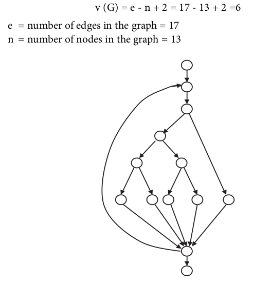The value of 6 is, according to McCabe, acceptable and in the middle of the range. He assumes that a value higher than 10 cannot be tolerated and rework of the program code has to take place.
The cyclomatic number gives information about the testing effort. The higher the value of the cyclomatic number, the more difficult it is to understand the flow in a certain program part.
Generally, static analyses should be performed first, before a document is subjected to review. Static analyses provide a relatively inexpensive.
3.3.1.3 Dinamic Analysis - testing software by executing the test objects on a computer.
black box testing
white box testing
experience-based testing
The test object (program) is fed with input data and executed. The program must be executable. In the lower test stages (unit and integration testing), the test object cannot be run alone but must be embedded into a test harness or test bed to obtain an executable program
The test object will usually call different parts of the program through predefined interfaces. These parts of the program are represented by placeholders called stubs when they are not yet implemented and therefore aren't ready to be used or if they should be simulated for this particular test of the test object. Stubs simulate the input/output behavior of the part of the program that usually would be called by the test object.
Test bed Point of Observation (PoO) and Point of Control (PoC)
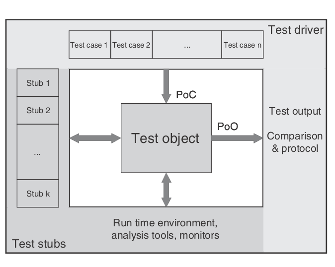PoC and PoO at black box and white box techniques
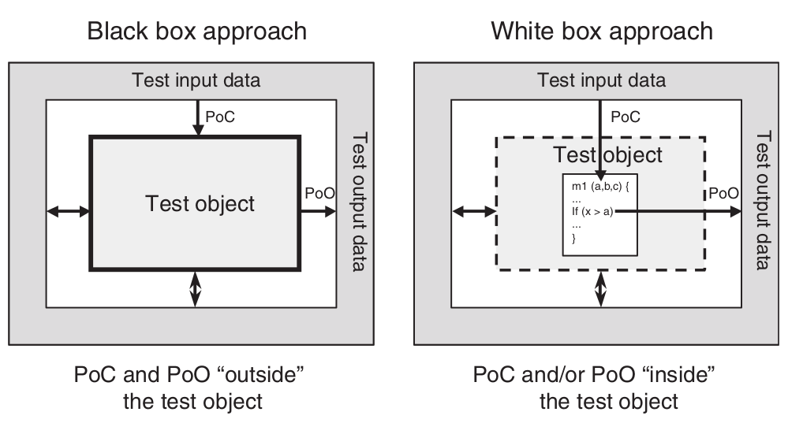White box testing is also called structural testing because it considers the structure (component hierarchy, control flow, data flow) of the test object. The black box testing techniques are also called functional, specification-based, or behavioral testing techniques because the observation of the input/output behavior is the main focus. The functionality of the test object is the center of attention.
Black box
Equivalence Class Partitioning
Example for the calculation of the dealer discount - description of the requirements: 'For a sales price of less than $15,000, no discount shall be given. For a price up to $20,000, a 5% discount is given. Below $25,000, the discount is 7%, and from $25,000 onward, the discount is 8.5%.' Four different equivalence classes with correct input values (called valid equivalence classes, or vEC) can easily be derived for calculating the discount.
Boundary Value Analysis
Boundary value analysis checks the borders of the equivalence classes. On every border, the exact boundary value and both nearest adjacent values (inside and outside the equivalence class) are tested. The minimal possible increment in both directions should be used. For floating-point data, this can be the defined tolerance. Therefore, three test cases result from every boundary. If the upper boundary of one equivalence class equals the lower boundary of the adjacent equivalence class, then the respective test cases coincide as well.
Boundary Value Analysis
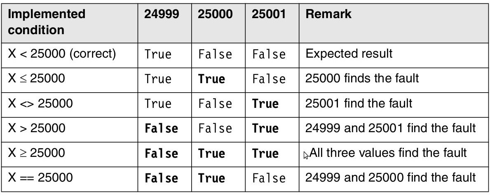Equivalence Class Partitioning
Invalid equivalence classes and representatives also needed.
State Transition Testing
In state transition testing, the test object can be a complete system with different system states as well as a class in an object-oriented system with different states. Whenever the input history leads to differing behavior, a state transition test must be applied.
Every state has been reached at least once.
Every transition has been executed at least once.
Every transition violating the specification has been checked.
Logic-Based Techniques (Cause-Effect Graphing and Decision Table Technique, Pairwise Testing)
The logical relationships between the causes and their effects in a component or a system are displayed in a so-called cause-effect graph.
Every cause is described as a condition that consists of input values (or combinations thereof). The conditions are connected with logical operators (e.g., AND, OR, NOT). The condition, and thus its cause, can be True or False
Effects are treated similarly and described in the graph.
Cause-Effect Graph for an ATM
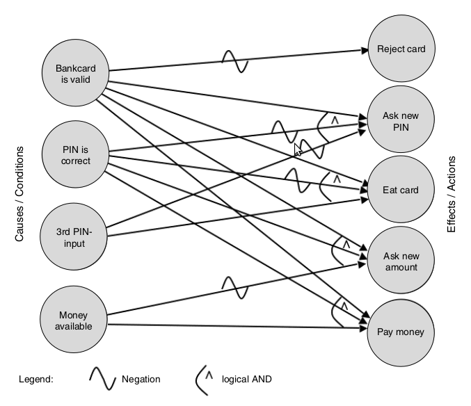Decision table
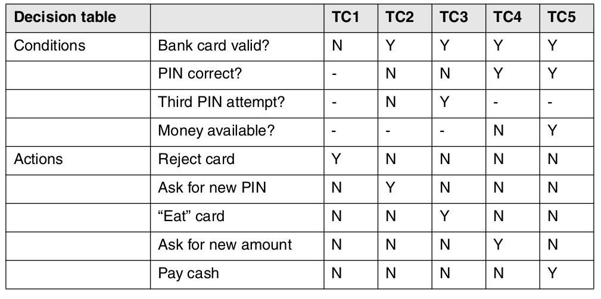Use-Case-Based Testing - Unified Modeling Language (UML) and diagrams
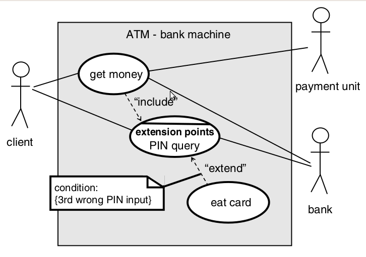General Discussion of the Black Box Technique
Wrong specification is not detected
Functionality that's not required is not detected
Verification of the functionality
White Box Testing Techniques
Code-based testing techniques
All code should be executed
Statement testing
Statement coverage =
(number of executed statements / total number of statements) x 100%
Decision testing or branch testing: Branch coverage requires the test of every decision outcome: both THEN and ELSE in the IF statement; all possibilities for the CASE statement and the fall-through case; for loops, both execution of the loop body, bypassing the loop body and returning to the start of the loop.
Branch coverage=(number of executed branches / total number of branches) x 100%
Testing of conditions
Path testing
General Discussion of the White Box Technique
Determine the test intensity
Useful for lower test levels
Coverage is desirable even at higher test levels
Missing source code is not considered
Intuitive and Experience-Based Test Case Determination
Intuitive skill and experience of the testers - error guessing
Exploratory testing - test basis are are of low quality, obsolete, or do not exist at all
Coverage is desirable even at higher test levels
Missing source code is not considered
3.4 Software Quality Measurement
descriptive statistics based (e.g., Pareto analysis, run charts, scatter plots, normal distribution)
statistical tests (e.g., the binomial test, chi-squared test)
trend analysis (e.g., control charts; see The Quality Toolbox in the list of further readings)
prediction (e.g., reliability models).
Pareto analysis
formal technique useful where many possible courses of action are competing for attention. In essence, the problem-solver estimates the benefit delivered by each action, then selects a number of the most effective actions that deliver a total benefit reasonably close to the maximal possible one
80% of problems can be attributed to 20% of causes.
Run chart
A run chart is a graph of data, in chronological order, that displays changes and trends in the central tendency (average). Run charts can track events such as:
· Total failures
· Complaint levels
· End user satisfaction level
· Suggestion levels
· Training efforts
· Production yields
· Number of invoices
· Number of system errors
· Down time (minutes, percent)
Scatter Diagram /scatter plot, X-Y graph/
Scatter chart is commonly used to graph paired data such as scientific, statistical and engineering data. It has two value axes, showing one set of numerical data along the X-axis and another along the Y-axis. As the cursor moves, the X-axis and Y-axis value change real-time and automatically. Thus, users can gain higher precision in drawing.
4.1 Test management
·- Tools for Management and Control of Testing and Tests - provide mechanisms for easy documentation, prioritization, listing, and maintenance of test cases.
Requirements, Incident, Configuration management; Tool integration - Tools for Test Specification - So-called test (data) generators can support the test designer in generating test data
Database-based, Code-base, Interface-based, Specification-based - Tools for Static Testing - executed on source code or on specifications before there are executable programs. Model checker, Static analysis, Tools for review support
- Tools for Dynamic Testing - Debuggers, Test drivers and test frameworks, Simulators, Test robots
- Tools for Nonfunctional Test - Load and performance test, Monitors, Testing of security, Data Quality Assessment
4.2 Selection and Introduction of Test Tools
A tool can never replace a nonexistent process or compensate for a sloppy procedure. It is far better to improve the effectiveness of testing first than to improve the efficiency of poor testing. Automating chaos just gives faster chaos - Fewster
·- Incident management
- Configuration management
- Test planning
- Test execution
- Test specification
4.3 Cost Effectiveness of Tool Introduction
Make a cost-benefit analysis

Evaluate the influence on test quality
4.4 Tool Selection
- Requirements specification for the tool
- Market research (creating a list of possible candidates)
- Tool demonstrations
- Evaluation of the tools on the short list
- Review of the results and selection of the tool
4.4 Tool Selection - Selection criteria
- Quality of interaction with the potential test objects
- Tester know-how regarding the tool or method
- Possibility of integration into the existing development environment
- Possibility of integration with other already used testing tools
- Platform for using the tool
- Possibilities for integration with tools from the same supplier
- Manufacturers service, reliability, and market position
- License conditions, price, maintenance costs
4.5 Tool Introduction
- Pilot operation - Coaching and training measures are important
- Success factors
- Introduce the tool stepwise.
- Integrate the tool's support with the processes.
- Implement user training and continuous coaching
- Make available rules and suggestions for applying the tool.
- Collect usage experiences and make them available to all users (hints, tricks, FAQs, etc.).
- Monitor tool acceptance and gather and evaluate cost-benefit data.
4.5 Tool Introduction - follows these six steps:
- Execute a pilot project.
- Evaluate the pilot project experiences.
- Adapt the processes and implement rules for usage.
- Train the users.
- Introduce the tool stepwise.
- Offer coaching.
4.6 Summary
- Tools are available for every phase of the test process, helping the tester automate test activities or improve the quality of these activities.
- Use of a test tool is beneficial only when the test process is defined and controlled.
- Test tool selection must be a careful and well-managed process because introducing a test tool may incur large investments.
- Information, training, and coaching must support the introduction of the selected tool. This helps to assure the future users' acceptance and hence the continued application of the tool.
References
Software Safety in a Nutshell, Clifton A. Ericson IISYSTEM SAFETY EVALUATION PROGRA, SYSTEM SAFETY EVALUATION PROGRAM
Software Safety, NASA Technical Standard, (1997)
Failure mode and effects analysis
Goddard, Peter. Software FMEA Techniques, 2000
Spillner, Linz, Schaefer. Software Testing Foundations, 2012